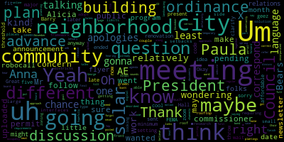
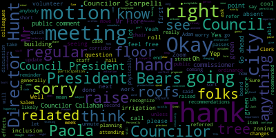
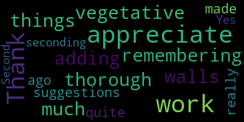

[Bears]: I ended up at City Hall and it's here to Anna setting up zoom right now. Oh geez. Oh no I was here anyway. But I think maybe apologies to Anna. I had a meeting here at five.
[Hurtubise]: Councilor Scarpelli is also on his way.
[Leming]: know if he's going to be attending in person.
[Hurtubise]: He's on his way. He's on his way virtually. Okay.
[Leming]: If they know if Scott's going to be attending building commissioner.
[Hurtubise]: I don't know the answer to that question. I can walk down the hall and get you the answer if you'd like.
[Leming]: My understanding was that he had some recommendations for changing some stuff about the green score to make it not conflict with the building code. But if we already have that written down somewhere so that it could be amended during the meeting, then that would be fine too.
[Bears]: He has them, sorry, he sent them to Paula. Paula's gonna present them. Okay, cool.
[Ramos-Martinez]: And I will, I will, I have already all the modification seen.
[Leming]: Okay, okay, just as long as you see what's happening. Adam, any word on when Councilor Scarpella is gonna show up? Or did he give you any indication of that?
[Hurtubise]: I know that he was logged in a minute ago, but I will text him. You have a quorum, I believe. So you can start regardless.
[Leming]: All right, let's do that. So welcome to the planning and permitting committee of November 13th, 2024. During this meeting, we're just going to we are going to go over mainly the proposed green zone. Green score zoning ordinance at the end of the meeting, we'll have a short presentation. I mean, very short on the Salem street corridor, which is going to be coming up the next regular. meeting of the City Council. Just as a reminder, if you would like to be recognized and speak, please raise your hand on Zoom first and I'll recognize you. But the goal of this meeting is to refer out the green score by the end of it for the regular City Council meeting next week. And with that being said, I will turn it over to Paola, unless any of my colleagues on city council have anything they'd like to say first, feel free to raise your hand really quickly. Oh, Adam.
[Hurtubise]: Mr. Chair, I need to call, because this is on Zoom, I need to do a roll call.
[Leming]: Oh, okay, sorry, I thought that.
[Hurtubise]: That's all right, and any votes you take tonight also have to be roll call, because this is a Zoom meeting.
[Leming]: Okay, sorry, that was- That's okay, don't worry about it. Yep, yep. Don't worry about it. Go ahead, go ahead and take a roll.
[Hurtubise]: Okay, President Bears. Present. Councilor Callahan. Present. Councilor, actually, Chair Lemme, I'm gonna call last, sorry. Councilor Scarpelli. I know he's on his way. I will mark him present and let you know when he shows up. Vice President Collins?
[Leming]: She is absent.
[Hurtubise]: Okay. And then Chair Lenning?
[Leming]: Present.
[Hurtubise]: Great. Good to go.
[Leming]: Thank you. So do any of my colleagues on City Council have anything they'd like to say first? No? All right, in that case, Paola, take it away.
[Ramos-Martinez]: Thank you, Mr. Chair. So I'm here representing Innes Associates. I'm the senior planner and designer from Innes Associates. And I'm also with my colleague, Jimmy Rocha. And I'm going to start presenting the green score document. Let's see.
[Leming]: Are you able to share?
[Ramos-Martinez]: Yes, I am. So I'm going to go by sections. I will do only the outline and just point important things. I have some comments from the building commissioner, and they have been also included in here. And I will mention every time that I have something that has been modified from the one that we sent by the comments from the building commissioner. First thing that I want to say is that the green score, we will review it several times. We are doing this, we are going forward with each of the districts that we are going to study and analyze. district. So for the moment, we only have here the districts to of the mystic Avenue corridor that we have, uh, implemented in the previous meeting. Um. So this we will go back and forth every time that we have a new district because we will And we will also review the site plan review. So we will go back as well to amend that. So what I want to make everyone very clear is that we will review this several times for the next year. So all that you see here is not set in stone. We can still mold it as we think it should be. So the purpose of the green score or I will start with what the green score is. It's an environmental zoning regulation that will establish a set of standards for the landscape and the site design. So that being said, what it does is that we want to provide flexibility in this performance standards and we will see how we want environmental functional landscapes. And what we have done is with this tool, we can approach the different goals that have been set in the Climate Action and Adaptation Plan that was released in the 2022. With this is improving flood resilience, heat mitigation, storm infiltration, water and soil quality improvement. So all these things are being tackled by the Green Score. Also, it offers a lot of free ecosystem services, including the mitigation of pollution, shade, energy savings, recreational opportunity, and also important enhanced property values and quality of life. So this is something that I wanted to read to be very clear on this. Sorry for this. And then I will go quite faster from this. In the overview, we're given a definition, we explain and present that this is a landscape elements menu. So this is a menu of landscape elements that what gives us a lot of flexibility for developers to choose which ones are best and fit best their projects. So they don't have to use all these landscape elements, just the ones that they need to get to the minimum score. Now, each of these landscape elements has a different value. And this value is given according to what is their standard performance, environmental performance, meaning if they are better doing their job, they're going to have a higher value. And what we call this value is multiplier, and we will see it later on. So what is the applicability where this is going to, where it's going to work, when it's going to have to go through green score. So every new principal building or major renovation. And there are two things. One is the one that is located on the FEMA areas. And I will explain a bit this further. And second, if it has to go through site plan review. So if we have these two conditions or only the Saipan review, then it has to go through Green Score. This is one of the modifications that we did according to the building commissioner comments. And we just wanted to specify that when we refer to FEMA areas, we are asking for both zonings. So the zone AE that has this 1% annual chance flood and hazard, and the zone X that is the 0.2%. And so basically what we have is any new development, we have to make two questions. And the first is, is it located in a FEMA area? Yes, then it has to go through Green Score. No, then we do the next question is, does it go through site plan review? Yes, then it goes through Green Score. No, then we have other environmental standards that will be the minimum pervious surface. This is in your documents. Another thing that we are also studying with the building commissioner, and we are talking about it, is how to define major renovations. At the moment this is the latest one that we have, but we are still working on this. This is still ongoing and we need maybe a bit more conversation with the building commissioner about if this is at the moment the good one and if we will review it later on. Are there any questions at this point? Okay, then I will.
[Hunt]: Sorry, should we just settle the language for the major renovation because we all agreed on major renovation conceptually we just need the language that is appropriate for Massachusetts building code.
[Ramos-Martinez]: yeah so that is the that's what we are trying to do, but there are many different. major renovation definitions in Massachusetts.
[Hunt]: He's here. So why don't we just have him answer the question now?
[Ramos-Martinez]: Oh, yeah, sure. So I've used the one that was like recommended. And yeah, I would love to hear his comment, his answer. So building commissioner.
[Leming]: I think he's a reminder it's generally it's generally only acceptable if the chair recognizes folks from the floor, but go ahead.
[Building Commissioner]: Okay, I'm not real good with the formality sometimes so it's. Two comments, the FEMA National Flood Hazard Area would like to see the designated by the X and AEs because that's how surveys are going to come in. X and AEs are not going to be that specific language. So that gives us a basis to fall back on X and AE. I think we have some A zones too. I tried to trigger the major renovation based on how we typically evaluate a building in terms of its level of renovation, which is the international existing building code. It provides nine levels of review from repair through others. So this language, it's based primarily in the concept of a work area and the concept of the level of repair or renovation. So I tried to capture both of those languages into this definition. and trying to stay away from some undefined things because I've had many arguments over the years about undefined things and they become crutches for people to work around the regulations. So I don't want to give us to have to think any more than we have to and stick with something we can refer to for further clarification if I need to dig into it. That's where this comes from. It's right out of the building code. you.
[Ramos-Martinez]: Yes. Thank you, Mr. Chair. Um. So I'm going to continue, um, with the rest of the sections.
[Leming]: Oh, Councilor Council President Bears.
[Bears]: Just to clarify. So this language for the major renovation. This is the language from the building code that the Great, and then for the X and the AE for FEMA, does X correspond to the 1% chance? Does AE correspond to the 0.2% chance? Just where would those fit in?
[Ramos-Martinez]: Yes, I will add them. So the zone one is, it has, are very different zones in MEDFAR's A and AE, and then the 0.2 is the zone X, but I will add that to the final language.
[Leming]: Thank you, thank you. Thank you. that's on.
[Ramos-Martinez]: Yes. Um so then we have this own districts. This is the table that it would be updated every time that we present a new district or we review a new district. So there are many to be determined. For now. We have the ones that are in Mystic Avenue. So mixes 123 and commercial. So we have been So how was working the green score if it was very difficult or where were the problems and they mentioned the affordable housing to be a bit of a problem because of the cost that they have and Um, so to get to the minimum requirements, sometimes it's a bit difficult. And that's why in, uh, we have, um, place that projects with affordable housing, maybe reduce the minimum required green score to 20. This is something that we will continue to work on. And especially whenever we have other districts that are more residential or that will have more affordable housing, we will look into it more because we will start to have different numbers. And so the 20 might not be the one that will fit. So maybe we have a percentage reduction, but this is what we have at the moment. And that's why we have it in this way. Then we go to the calculation. I'm not going to read this. What I'm going to do is to present that we have elaborate an Excel worksheet so that the personnel from the city or the developers are able to use this, and it's a lot easier. So do you see the Excel now?
[Leming]: We don't see the Excel. Oh, yep, now we do. I see it.
[Ramos-Martinez]: So we have created this Excel to make it a lot easier, the calculations. And we have some instructions in order to where you need to fill the numbers and what you need to do. We also created comments in each of the cells. So if they have a red triangle and you hover over it, you see extra information about different requirements and standards that they have. And then we have the final score will appear automatically. So all these calculations are, you can enter new ones and then the calculations we immediately update. So these will be also one of the deliverables that they will need to hand in. There are also different requirements, that is, for example, that the E elements, which is the permeable paving, and the F, which is at the moment enhanced tree growth systems, this can only be the sum of these two. need to be less than one third. And that's something that will appear here and will pop out if it's more than the 30%, 33%. And so it cannot work. So it's all prepared so that city staff and also the developers, well, it's easier to do these calculations. Um, so going back So we have then is the list of the table of all the landscape elements by categories. And as I said, you see their multiplier, their value, according to how good they do their job, vegetative walls, permeable paving. Then we have the table of equivalency, because all the plants needs to be calculated in an equivalent square feet. So it's easier to do these calculations. It's also here, but this is done directly into the Excel worksheet, so we don't have to worry about this, but it's there. We also have all the bonus that we can sum in our calculations and are also on the Excel. Something that is important for the calculation is to know that we can stack a lot of these elements. In the same area, you have the soil depth that you take into account, you have the ground covers that you also take into account and sum the credit and then all the shrubs and trees that are on the same area can count. For example, with the green roofs, you will count not the soil and the ground cover, that is like a package that goes with the value itself, but you can count all the trees and all the shrubs that you're going to implement, that you're going to plant on top. So it's interesting, it's important to know that a lot of these elements are stackable, and so it's easier to reach the minimum. And then we have a lot of different standards. First, we start with the general that apply to all of the green, all of the landscape elements. And then we go into more specific. So planted areas, all the plantings, the shrubs, the large shrubs, all the sizes and categories of the trees, installation, spacing, so all the requirements that they need. are in these standards. I'm not going to go through them. If you have any questions, let me know. And there is another of the comments that we got from the building commissioner, and it's about the porous alpha asphalt and pervious concrete. So these are their work if they are well executed, their work if they are well maintained. So what we want is to make sure that people understand that these are medium and high maintenance elements. And so that's why we have in here that we recommend for light traffic only and that maintain long term performance. It is recommended that the surface infiltration rates be inspected annually during rain events to observe that any changes of effectiveness in infiltrating the stormwater and also to remove any soil debris that prevent the clogging of the pavement. So it's recommended that the porous asphalt pavements be vacuumed two to four times a year or power washed. So we wanted to keep this in the standard so that it's clear that these are a bit more highly maintained. And then we have also the different standards and then in section eight we have all the bonuses that can be applied and some in the as an extra. So for example, the landscape that consists of native adaptive non-invasive plant species, if the 50% of the annual irrigation are met using harvest rainwater, if the landscaping is visible from adjacent public right-of-way or public open spaces, this is a very easy one to get, or if it's foot cultivation. So certain standards as well for those bonuses. I'm going to stop here and ask if there are any questions in these sections.
[Leming]: If there are any questions, feel free to raise your hand on Zoom. Director Hunt.
[Hunt]: Thank you. Thank you, Paula. I just wanted to clarify something. When you were going through the part about under-zoned districts, there is an asterisk that projects with affordable housing may reduce the minimum required green score to 20. I thought from our conversations we were saying that projects that are 100% affordable would reduce the green score to 20 because we're requiring that any project with 10 or more units have at least one unit of affordable housing. So I wasn't clear that the argument was that if they had even one unit of affordable housing, they couldn't afford to do the whole green score. So I just thought we should clarify that.
[Ramos-Martinez]: Yes, that's a very good point. And it should be something that is more than the minimum at least. So we will need to figure it out how much is that minimum or if it's 100% affordable housing. I think that it might be not the 100, but way more than the minimum. So we need to study that better. Thank you, Director Hunt.
[Leming]: Any other questions? All right, continue. Thank you.
[Ramos-Martinez]: Yes. Thank you.
[Bears]: Um wait, uh, President Barry's, uh, I was later. No, that was me. I was late on that one. Um. I would just throw out the idea of maybe a 25% at least 25% affordable, um, as a minimum threshold. Um. I also just had a question about how. This interfaces with the solar ordinance. Um. You know, because I think if we're talking about some. you know, relatively large buildings with relatively small side setbacks. And we also have the solar ordinance requiring solar on the rooftop. I'm just wondering how much that limits the green roof type solution.
[Ramos-Martinez]: So the green roof can be applied with solar. It's actually, sorry, it's actually better if it's with solar because of the temperature. It's lowering the temperature that it needs and it doesn't overheat. maybe we can do later on if it's when we study the communal solar approach and that we can see if that is also getting less of the green score, some kind of percentage reduction as affordability. I think that these are things that we will come back later when we do the final cleaning. and see better. If it's a project that does something for the community, how can we reduce it so that we don't step over and the projects that we want to happen don't stop them because of green score? So these are things that we are hearing, and we will consider it whenever we do these other pieces.
[Leming]: Great. Thank you. All right. Thank you. Keep going.
[Ramos-Martinez]: Yes. And so now we'll go to the... Sorry. the last amendments, and these are the amendment sections that we do for the site plan review. So we will need to modify the requirements because now we are also asking requirements for the green score. So this is about all the deliverables that need to be also hand in in order to review the green score and that everything is according as it should. So all these plans need to be prepared by a registered architect, landscape architect, or professional engineer, and they need to do all this following information. The score sheet, but also landscape drawings, typical drawings of the site plan, demolition, materials, grading, plantings, and certain details, photographs of the trees that are meant to be preserved, and specifications. And then we will also at some modifications and as builds, this as builds is so that in a way we are enforcing this with the signature of the professionals so that we don't have to check every of these projects. So this is a way of enforce it that we make sure that everything that it says and is on the plans will be as built. And then we also added a waiver. So upon request, the site plan review authority may waive the requirements of green score in the interest of the design flexibility and overall project quality. And upon a finding of consistency of such variation with the purpose of the green score and the relevance zoning districts overall purpose and objectives. This is something also that we have add that you didn't have in the previous document, this waiver. and this is the end of the document.
[Leming]: Thank you. Any other input from anybody else on the call? Councilor Callahan.
[Callahan]: I just appreciate all the work. It's very thorough. Thanks so much for adding in things that like vegetative walls, remembering suggestions that we made quite a while ago. So really appreciate the work. Thank you.
[Leming]: Mr. Commissioner. Yep. I just ask you to unmute. Thank you.
[Building Commissioner]: Thank you. I guess the question I have is knowing that building schedules and planting schedules don't often come together. Is there anything that should be built into this to address that issue of a project ends up in November, but it's not time to complete the plantings? And how do we address that?
[Ramos-Martinez]: Um, that is a good question. I haven't seen anything in the other green scores from different communities that I've seen.
[Leming]: Director Hunt? Sorry. I might have mistaken that pause as a... No, no, it's okay.
[Ramos-Martinez]: Yeah.
[Leming]: Director Hunt?
[Hunt]: So I would think of it as so when we do site plan review, we do require certain things sometimes now like trees and some plantings and we have recommended that we only issue a temporary occupancy, just like if they're looking to pour concrete in December, they can use the building, but that's still just a temporary occupancy permit that then is annoying and has to get followed up with. But I'm aware that we do, it's what we would do now.
[Building Commissioner]: In my experience, we've often sought bonds to cover that. Temporary occupancy permits are not the catch-all tool you'd like them to be. They're a little tricky sometimes, especially the longer they go on. We're not really supposed to be issuing them for potentially four to six months if we're between seasons, and they're not as enforceable as one would love them to be. Because I really don't want to come back four months later and try to revoke somebody's occupancy on a project for plantings. It's going to go over very poorly. It's up to the planning board, I suppose, but bonds or other things are the type of mechanisms that carry more teeth.
[Ramos-Martinez]: Um, yeah, I will look into this. I think that's a great question. So we will do some research, uh, about this.
[Bears]: All right, so Council President Bears. Thanks. Um, and on that front, I think It seems like we're kind of getting this in, the framework in, and there's just a couple of things that we're gonna work through as we adopt more districts and we're able to do the research on the community solar. But I just was wondering, maybe it's a question for Paula, looking at other ordinances, or maybe a question for the building commissioner. Are there other places or other zoning requirements where we use the same approach that you described, Mr. Commissioner, with the bond question versus a temporary occupancy permit? Scott?
[Building Commissioner]: I'm not aware of any off the top of my head. I just know that in my experience, bonds carry more strength because they ultimately carry the idea that if you can't perform, we will perform for you. And it's not uncommon for developers at the end to get a little light in the budget to complete their work. So I just don't want to be in a position of having to try to revoke somebody's occupancy, which means I have to shut a business down over landscape plantings and green score compliance. It just, it's definitely very awkward and probably doesn't a great idea. Whereas if they have a cash bond out there, they're in a different position.
[Bears]: And if I may, Mr. Chair.
[Leming]: Go ahead.
[Bears]: It sounds to me like the concern is if they finish up in November, they're not doing plantings till the spring, if they already have all the permits and approvals they need from the city, maybe they just never follow through with their landscaping plan. Is that essentially the concern we're trying to correct for?
[Building Commissioner]: Yes, and I just think if that's the route you wanna go to ensure a conformance, it wouldn't be bad to try to build it into the ordinance so they're aware of that as a condition for completing. It's just a common thing with landscaping. Got it, thank you. Planner Evans.
[Evans]: Thank you. Yeah, I'm just gonna say that I don't really see the difference between compliance with green score and compliance with approved landscaping on plans because they shouldn't be getting final CEOs if they haven't complied with that. I think bonds are fine. I think the issue with bonds is if they don't follow through that it's often more expensive for the city to to do the work that it is for the private developer. So the bond, I think, would have to be, there'd have to be some multiplier that, in effect, so that we make sure that the bond is actually worth what it would take for the city to hire someone to do the work. And then how do we, or is it just a we'll keep your money kind of threat?
[Building Commissioner]: Mr. Commissioner. Again, it is usually is a multiplier. Considering that fact, it also becomes landscaping becomes a, you know, things die over the winter that make it planted, you kind of need a longer period of warranty and coverage and timing than you do for the building. And as KP law will tell you, By law, I get a little bit constrained about holding occupancy for things outside the basic building. It becomes contentious and also something that can go to other authorities to override me. So I just want to make sure we're taking it the best way you can and putting something in the language that tells people that information. You don't have to put it in language, I guess, but it just seems like a good idea to me.
[Leming]: Personally, I'm thinking that a lot of these points can be, I mean, a lot of these do seem to be relatively minor changes at this point. And, sorry, I was looking at Zach to see if, and I think that, This is likely subject to the building commissioner's previous changes that he recommended. This is still likely able to be referred to regular council. And if the Planning Department and the building commissioner do come up with any recommendations over the next week, we could incorporate those during a regular meeting.
[Bears]: Council President Bears. Yeah, they could also be incorporated during the CD board hearing. Yeah.
[Leming]: So with that, is there any further discussion? you know, I do think like these are important technical points, but they can also be done between the consultants and the staff and sort of hammered out during some of the, during some longer meetings between individuals and recommended to the council or the CD board later. With that, is there any other comments from staff or city councilors? No. Do we have any motions on the floor?
[Scarpelli]: Councilor Leming, I believe there's a resident that has their hand up.
[Leming]: I'm aware of that. Okay, thank you. I'll get to that. I'll get to that.
[Bears]: I'll just I'll make a motion to refer out to the regular meeting pending the discussion. Yep.
[Leming]: Okay. Motion to refer out to the regular meeting pending discussion. And I did. Sorry. Do we have a second on that?
[Callahan]: That was that was me seconding.
[Leming]: Thank you. And with that, I do see that Mr. Fiore's hand is raised. So we will move to public comment. Just to check, because this was a little bit unclear, like it was kind of a last minute switch to Zoom. President Bears or Councilor Callahan, can you verify that there is, is there anybody physically in the audience at the hall right now? No. Okay, in that case, we'll move on to public comment and I'm going to ask Mr. Fiore to unmute. Mr. Fiore, if you'd be able to provide your name and address for the record.
[Fiore]: Thank you, Chair Leming. Gaston Fiore, 61 Stickney Road. I just had a question regarding cool roofs. Unfortunately, I don't have access to this document, so maybe it talks about it and I just couldn't read it, but I was wondering whether there are any points given to cool roofs. So in California, for example, in the LA area, They require a minimum SRI by code. So I was wondering whether something like this was considered. The second question that I had is that related to what President Bears said, I would like to see more information regarding solar panels and their interaction with green roofs. So I haven't read about it, so I don't know, but I was wondering in terms of natural irrigation, rain, whether it affected the green spaces in the roof or not. And the third question that I was wondering is, So I know that we're talking about the Mystic Avenue corridor and then Salem. So those are kind of like high structures, but for something a little bit lower, if this extended to other areas of the city, I was wondering whether there should be some consideration in the zoning related to tall trees, new ones that are planted and their location within the lot. So as to, for example, not plant or at least not give the same number of points on the planting of trees, for example, that face south that could occlude any solar panels that could potentially be put on the roof and give extra points to put those tall trees on the north side of the lot so as to not occlude any solar panels that could go on top of the roof. Because otherwise, I think we should also try to incentivize the installation of solar panels. And, you know, I always pay attention, for example, tall trees on the sidewalk, like if there's any new trees to try to get them away from roofs that face out so as to not prevent people from installing solar panels. So I was just wondering whether there could be some writing sort of incentivize any new tall trees that are planted to sort of like to not occlude solar panels that would phase out. Thank you so much.
[Leming]: I was taking notes on what you just said. So you're wondering if the effects of irrigation on green roofs, zoning related to tree height and their ability to affect solar panels. And could you just rephrase your first question again?
[Fiore]: So the first one was related to cool roofs. So I think I sent that email a while back. So cool roofs are roofs that are actually painted with paints that reflect the sun rays and make the roof cooler. If this is in a downtown area with tons of buildings, it actually decreases the heat island effect. And in areas where the climate is a lot hotter than what we have here in New England, then this is actually required by code, for example, California. And it's a much cheaper way to just paint the flat roof, for example. So it's much cheaper than having a green roof.
[Leming]: Okay, so inclusion of cool, is there inclusion of cool roofs in the green score inclusion of the effects of irrigation on green roofs or anything about that zoning related to tall trees? I do know that there is some work being done with regards to the tree that there is some work being done on the tree ordinance. I think that was, that's primarily Councilor Collins and Councilor Callahan who are doing or spearheading a lot of the work on that. If Councilor Cowlin, if you have any information related to trees, feel free to raise your hand, but otherwise, otherwise, Paola, can you confirm whether or not there's anything related to cool roofs or anything related to irrigation on green roofs in the current draft?
[Ramos-Martinez]: Um, so we haven't, we choose not to include, um, uh, cool groups, um, for many reasons. Um, there are some communities that they do it, uh, New York, California. We think that it doesn't do enough, um, for it doesn't do anything for stormwater, for example. Um, and it's a lot better for heat Island effect to do, um. to have green instead of just the concrete but being white. And there is not a lot of proof that we have seen enough concrete so that we wanted to include it. So we haven't chosen not to do it for those reasons. Then the irrigation. So there is absolutely no problem to put solars with green roofs. The green roofs do not need the irrigation unless it's a very extensive green roof. Otherwise, we'll be with rainwater. And it is very much appreciated because then they reduce the the temperature in the environment where the solar panels are so they don't overheat and they are maintained to the perfect temperature so that they are more effective. So they are actually in many, many places. There are many, many studies that reflect this. So and I want to really stress that this is for the heat mitigation, but also stormwater for quality of water and functional landscapes. So that give us a lot of other free ecosystems services. And so the elements that we have in here are always treating several of these issues. That's why the cool groups were not admitted. Am I? And then the tree location. I think that landscapers should know exactly where it should be. And if that project has solar panels, they should be very aware of where they should locate those trees. So that is as effective as possible. If it's public trees, then that will go through the tree ordinance. Yes.
[Leming]: All right. Thank you, Paola. I think that. Thank you. I appreciate that. Thank you. All right, and not seeing any other folks here for public comments. So Council President Bears.
[Bears]: Thanks, I just wanted to note Alicia and I both posted some links to the documents. Apologies that they weren't up on the council portal. They went up, we got them after the final, the agenda went up online. So I forgot to upload them, but I just uploaded them. And I think Alicia, beat me to it and had them uploaded to the city website before this meeting, so.
[Leming]: I also emailed it to Mr. Feuer during his public comment, so I feel like we just really rushed to get those documents all at the same time. So there is a, there's, Director Hunt?
[Hunt]: I just wanted to ask a clarifying question. Paula, the version that you were reading from tonight, was that exactly the same as what's up on the city's website and the council has? And if not, can you send it and we'll upload the current most updated version? I just wanted to make sure that it was the exact same version.
[Ramos-Martinez]: So it doesn't have the comments from the building commissioner. So those are not in the one that is updated. I will send immediately this version so you can upload it. Thank you.
[Leming]: Thank you. All right. We have a motion on the floor. Mr. Clerk, can you please call the roll? Do you have the exact text of the motion, by the way?
[Hurtubise]: President Bears, the motion that I had was that President Bears move to refer the paper out to the regular meeting pending further discussion.
[Bears]: You can take the pending further discussion part out. We had it. I just wanted to make sure we didn't do it until we heard from the public.
[Hurtubise]: And I have a second from Councilor Callahan on that. Great. Here comes the roll call. President Bears. Yes.
[Callahan]: Yes.
[Hurtubise]: Vice President Collins is absent. Councilor Scarpelli. Yes. Chair Lemon.
[Leming]: Yes or yes. One absent the motion passes the chair is referred out to regular meeting. And the other item on the agenda is just a quick, very quick update on the Salem Street corridor. Is that, Paola, as well, you had that update?
[Ramos-Martinez]: Yes, I will just talk. I will just say what the updates are. So we are working on the Salem Street Um, so now that we have mystic Avenue, we will, um, use. Some of those districts, the ones that fit, uh, Salem street, um, like mix use one and two, and we will study which uses, um, might be added or taken out. So we will modify it. the dimension standards that are needed. So we are looking into all of that. The structure will be very similar to the Mystic Avenues zoning. and what we are looking at is Salem Street is a different hierarchy from Mystic. It's more of a neighborhood kind of feeling. So we are adapting those districts to this smaller scale of this more neighborhood kind of directed zoning. So we are updating those and we will present it in the next meeting.
[Leming]: Wonderful, thank you. Councilor Scarpelli.
[Scarpelli]: Thank you, Chair Leming. I appreciate all the hard work we're doing, and I know that I sound like a broken record, but I know as we move forward with, I know Director Hunt's on as well, Um, I know I read what we tried to. We originally, when we first started this process with the RFP for, um, zoning consultants and making sure that we brought these, um, these steps to the neighborhoods and to the communities that were rezoning step-by-step. That's something I thought the former council really stressed. And I think that it would help with, we can see lately a lot of misinformation going out and making sure that the right information goes out and going into those neighborhoods. I know that one of the biggest concerns that I keep hearing is that, you know, Salem Street, is being rezoned for 12 stories. Now I know we're, um, you know, we're saying no, but you have people out there that are spinning a dialogue. So we have to make sure that, um, you know, I know that one thing that we asked for in the RFP when, and it's, um, applied for it was a comprehensive plan for, um, meeting with the community. And I know that we've said that we've had multiple meetings with in this setting, and I don't disagree, but again, I really would recommend that we look at that process and bring it to the neighborhoods where the neighborhoods can really share what they want their neighborhood to look like. I think like we've talked about when we rezoned many as a as a department head in Somerville I was directly involved in the rezoning of different areas in the community where we use this example back a few years ago why we thought it was so important um chair Leming that we had um different city departments like recreation police fire um dpw where as you put these plans out and these zoning reforms out, that people really felt that they were part of the process and they were helping design what their neighborhoods wanted to look like. So you can tell me I'm wrong, but I really would stress that we could follow through with that in the future. So thank you.
[Leming]: Thank you, Councilor Scarpelli. Council President Bears.
[Bears]: Thank you. Yeah. And we definitely, you know, I hear what you're saying, George, and We've had some discussions about how we're going to get the word out going forward. I think the first thing to say is that for Salem Street. The next meeting we're going to discuss, this is going to be December 11th, and the plan is to get that out through all the different city channels, an announcement, and save the date for that community meeting, digital flyer, and I believe we're going to work on a robocall for that meeting. And then for the meetings from January through May, the plan is to put together a full uh release and web page that talks about different neighborhoods that we're going to be talking about each month and my goal is also to have hopefully um along with that the meeting dates and get those out a month in advance and do uh the follow-up of the announcement um the flyer putting it out in the city newsletter and the planning newsletter and doing a robocall to those neighborhoods uh in advance of the meetings so that we can um Get that message out more clearly. So we talked about that after our last meeting and we want to Just get that a little cleaner and tighter so that folks know a little more in advance and that we have the Um, all of the different city outreach tools at our disposal are used to reach folks about those meetings.
[Scarpelli]: Uh, that, that's, that's, uh, that's if I can, Mr. No, no.
[Leming]: Well, sorry. We, we went over ground rules at the beginning, raise, raise hand. And then, uh, and then, and I saw that, uh, director hunt raised her hand. And so then I'll, uh, did you have, um, okay. Councilor Scarpelli.
[Scarpelli]: I apologize that I missed the beginning of the meeting, but as a fitting city council play again. You know, my import is is. is, uh, a piece that's coming from our community. And I appreciate council beers, uh, for, uh, expanding on those efforts. I think that's a, that's a great effort. And that's something that going back to those residents that have reached out to me and let them know that that's coming down the line. I think that's going to be super helpful as we move forward to make sure everybody feels like that's part of the process. So thank you very much for your leadership on that.
[Leming]: Thank you. Councilor Scarpelli, director Hunt.
[Hunt]: Thank you. I just thought I should follow up because we've been moving some of this forward. So today mailing went to every parcel owner in on Mystic Ave. about with the date for and about next Wednesday's Community Development Board hearing and the City Council public hearing. And just as an FYI, that is a courtesy notice. It's similar, it looks similar to a legal public meeting notice, but there is no legal requirement. So we took some liberty to make the language a little bit more user-friendly in what we sent out today, just so that it was more accessible by people. There is a legal notice that is posted as well. So that went in the paper mail today, and then I met with Steve Smerti, our director of communications today, about doing a big press release that would talk about, frankly, that we're implementing the comprehensive plan with the zoning updates that would list the 20th, the meetings on Mystic Ave, would list the dates that we're planning to have the Salem Street here and then would have the calendar of what topics we're looking at for what months based on the most recent update email exchange I had with committee chair Collins on this. So I am hoping that we can actually get that press release out in the next day or two so that and it'll then be emphasized everywhere else. As much as I like the idea of going into the neighborhoods and all, I, I have to say this Somerville planning department has literally seven times the staff, we have they have 70 employees in that department and we have 10 so we are trying we try to do outreach we're trying to do communications with it, but we don't have the bandwidth. that a community that has double our city budget and 10 times, literally 10 times the staff in the planning office. So we're trying to do what we can with the resources we have.
[Leming]: Thank you, Director Hunt. Councilor Scarpelli.
[Scarpelli]: Thank you so much. That's great information to share. And I think that's where my problem comes in, Commissioner Hunt. Um, when we did the RFP, we we knew our limitations in your office. And I think that's why we asked to put that in the RFP to bring in the capable staff of and it's to come in and work with those communities. So I find it disheartening that we knew that this isn't a secret that we don't have enough staff in your office, but this is why we asked to be put in, and this is why it's written in the RFP as a comprehensive comprehensive plan for outreach for the community. So I appreciate everything you've done way more than what we talked about the last couple of weeks. And it's so important. But again, I'm going to implore that we find a way to go into the neighborhoods. I just don't, you know, everybody has to have an opportunity to get involved. And like I said, I appreciate what Councilor Beaz is doing. I appreciate what your response was and how we're trying to get the information out. But believe it or not, there's still a big gap between the people that that would make it that would make an effort to come into their community and to their neighborhoods to talk about what their visions are to share those. So again I know our limitations but again I revert back to our RFP where it's it says that it was and we were pretty clear when we started talking about the RFP as a council that this is the vision why and to all due respect um We all agreed. I didn't think one person didn't agree that this is the type of format that we need to go into the neighborhood. So I apologize to be a Debbie Downer, especially with some of the good information that we've heard tonight to get the information out, but I'm sorry, I still think that's not, it's not what we asked for. So thank you.
[Leming]: Thank you, Councilor Scapelli. Do we have any motions on the floor?
[Bears]: do you take public participation?
[Leming]: Sure, yeah, let's go into public participation for this item. Mr. Fiore?
[Fiore]: Yeah, sorry Mr. Chair. I just wanted to ask whether There was any thought about having community volunteers. I don't live in any of these two corridors, but I would still. try to volunteer some time to sort of do the outreach. I know it would be better to find residents that live in these two areas, but I mean, I love participating in what's going on in the city and then I, you know, I can substitute like city council meeting here and there and just like, you know, do some of this outreach. So I was wondering whether there was any effort done into finding sort of community volunteers that could be engaged, come to these meetings, actually learn the, you know, the facts, and then go and talk to our community, talk to our neighbors, since they live there. They will be even better than having someone from the city that, you know, they don't regularly interact with. and converse with their neighbors about what's going on in some of these meetings. I was just wondering what this was discussed or whether this could be discussed in the future, either for these zoning changes or for some other zoning changes in the future. Thank you so much.
[Leming]: Well, the city does have a number of folks who volunteer in certain service that usually they're on boards or those sorts of volunteer positions. So I was on the CPA. So the city does utilize volunteers for a lot of different tasks. I don't know if we've utilized them for that one specifically, but Council President Bears.
[Bears]: Yeah, I was, I don't think we have kind of like a neighborhoods program per se. Um, and I'm not sure what the capacity would be to, uh, coordinate that, uh, with the communications officer, the community relations, uh, staff. Um, but I mean, I think that's the very least something we can try to do is also share this information out through the community liaisons and they might have, uh, through the health department, they might have some, grounding in different neighborhoods of the city, but yeah, I don't know what the mayor's team in community relations and constituent services has in terms of volunteers around like a neighborhood program.
[Leming]: Yeah, no, the community liaisons I think is a very good point. So those are folks that are probably most similar to what Mr. Fiora was just talking about, but you're right in terms of just strictly location-based. I'm not sure if we have one of those. Paola.
[Ramos-Martinez]: Just to clarify, so what we're doing is not a comprehensive plan. We are building on the comprehensive plan that was done two years ago with two years of, or something like that. that had two years of participation and a lot of discussions with the neighborhoods. So what we're doing is updating those things that were raised by all the residents. We are building on that, taking that, and doing the update on the zoning. Um, we do have in any case plan, uh, some of the budget to do, um, some participation. So that's something that whenever it's needed, uh, in and in the neighborhoods that are really needed, uh, we can do some of this participation process, um, or at least information. So because we will build this 2025 schedule and program, we can start setting some of this participation more or less dates so that we can start working on this.
[Leming]: Thank you. Thank you, Paula. So with that, unless someone else has entered the city hall physically, I'm not seeing it.
[Bears]: There's no one in the chamber, no.
[Leming]: Yeah, not seeing any other folks who'd like to do public participation. So we'll close that. And with that, do we have any motions on the floor? Motion to adjourn. We have a second.
[Callahan]: Second.
[Leming]: Thank you. On the motion to adjourn by Council President Bears, seconded by Councilor Callahan, Mr. Clerk, please call the roll.
[Hurtubise]: President Bears?
[Leming]: Yes.
[Hurtubise]: Councilor Callahan? Yes. Vice President Collins is absent. Councilor Scarpelli? Yes. Chair Leming?
[Leming]: Yes. Four in the affirmative, one absent. Motion passes. The meeting is adjourned. Thank you very much for coming out tonight, everybody.
|
total time: 5.59 minutes total words: 878  |
total time: 10.73 minutes total words: 1359  |
total time: 0.23 minutes total words: 44  |
total time: 5.39 minutes total words: 866 |
{kind=link}
{kind=link}
{kind=link}
{kind=link}